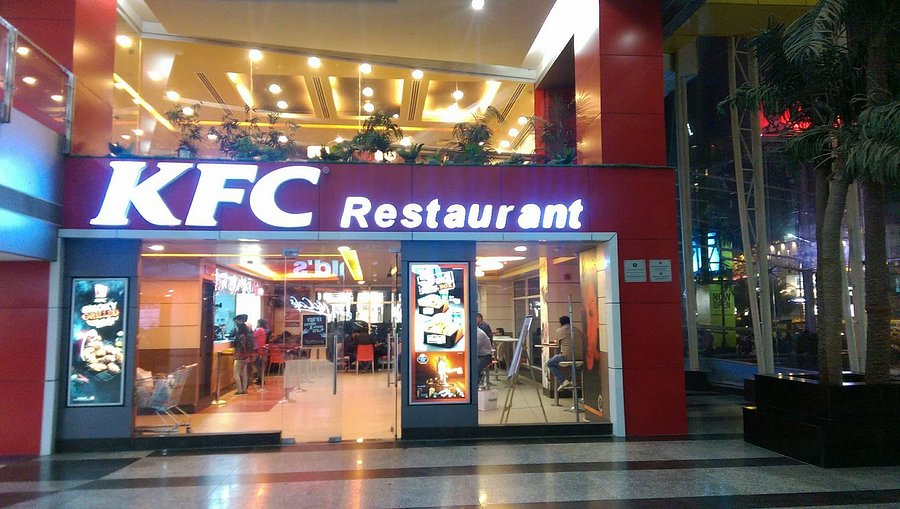

Our Restaurant

About Restaurant
Welcome to our restaurant! We are dedicated to serving you the most delicious and authentic meals made with love and care.We believe that great food starts with great ingredients, which is why we source everything fresh daily and prepare every meal with absolute care. Pair your favorite dishes with our freshly squeezed, refreshing juices and wrap up your meal with our rich, creamy ice cream. For us, cooking isn't just a job—it’s an art, and our mission is to serve happiness, flavor, and unforgettable memories on every single plate. Thank you for being a part of our delicious journey!"
Our Vision
To become the most loved and trusted food destination, known for exceptional taste and hospitality.
Why Choose Us
- Fresh Ingredients: Hum hamesha taaza aur khalis masale istemaal karte hain.
- Best Quality Food: Khane ka miyaar aur zaiqa hamari sab se pehli tarjeeh hai.
- Fast Delivery: Aap tak garm aur taaza khana waqt par pohanchana hamara kaam hai.
- Customer Satisfaction: Hamare customers ki khushi aur unka itmaanan hi hamari kamyabi hai.